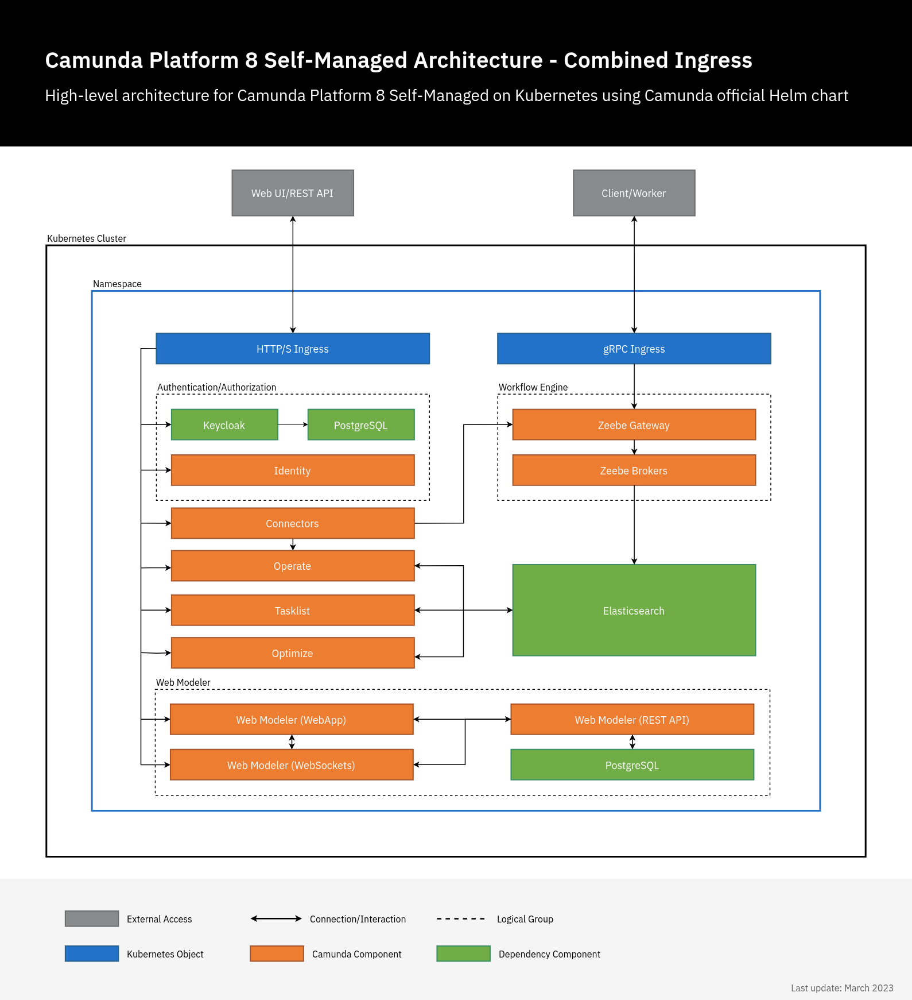

Camunda 8 Helm installation
We recommend using Kubernetes and Helm to deploy and run Camunda 8 Self-Managed in production.
There are many ways you can provision and configure a Kubernetes cluster, and there are a number of architectural choices you need to make. Will your workers run in the Kubernetes cluster or external to it? You will need to configure your Kubernetes cluster and modify this to suit the architecture you are building.
Camunda provides continuously improved Helm charts, of which are not cloud provider-specific so you can choose your Kubernetes provider. The charts are available in the Camunda Helm repository and we encourage you to report issues.
What is Helm?
Helm is a package manager for Kubernetes resources. Helm allows us to install a set of components by simply referencing a package name and allowing us to override configurations to accommodate these packages to different scenarios.
Helm also provides dependency management between charts, meaning that charts can depend on other charts. This allows us to aggregate a set of components installed with a single command.
For more details, check the full list of Helm values.
Components
The following charts will be installed as part of Camunda 8 Self-Managed:
- Zeebe: Deploys a Zeebe Cluster with three brokers using the
camunda/zeebeDocker image. - Zeebe Gateway: Deploys the standalone Zeebe Gateway with two replicas.
- Operate: Deploys Operate, which connects to an existing Elasticsearch.
- Tasklist: Deploys the Tasklist component to work with user tasks.
- Optimize: Deploys the Optimize component to analyze the historic process executions.
- Identity: Deploys the Identity component responsible for authentication and authorization.
- Connectors: Deploys the Connectors component responsible for inbound and outbound integration with external systems.
- Elasticsearch: Deploys an Elasticsearch cluster with two nodes.
- Console: Deploys Camunda Console Self-Managed.
- Note: The chart is disabled by default and needs to be enabled explicitly as the Console is only available to enterprise customers.
- Web Modeler: Deploys the Web Modeler component that allows you to model BPMN processes in a collaborative way.
- Note: The chart is disabled by default and needs to be enabled explicitly as Web Modeler is only available to enterprise customers.
The existing Helm charts use the Elasticsearch configurations by default. The Helm charts can still be used to connect to Amazon OpenSearch Service. Refer to using Amazon OpenSearch Service.
Zeebe: Configure the OpenSearch exporter.
Operate & Tasklist: These components use the same parameters for both Elasticsearch and OpenSearch. Replace the elasticsearch part of the relevant configuration key with opensearch, together with its appropriate value.
For example, CAMUNDA_OPERATE_ELASTICSEARCH_URL becomes CAMUNDA_OPERATE_OPENSEARCH_URL.
Refer to the Operate and Tasklist configuration documentation for additional component configuration parameters to update.

When installing the camunda-platform Helm chart, all components shown on the architectural diagram above are installed.
Versioning
Starting from the Camunda v8.4 (January 2024), the Camunda 8 Helm chart version is decoupled from the version of the application (e.g., the chart version is 9.0.0 and the application version is 8.4.x).
For more details about the applications version included in the Helm chart, review the full version matrix.
Installation
At helm.camunda.io, you'll find a Helm chart to configure a 3-broker cluster with:
- Two Elasticsearch instances
- Operate
- Two Zeebe Gateways
- Tasklist
This size is comparable with the Production-S cluster plan in Camunda 8 SaaS. It should be sufficient for 80% of use cases.
Prerequisites
Before deploying Camunda using Helm, you need the following:
Helm repository
You have to add the Camunda Helm chart repository to use the charts. Once this is done, Helm can fetch and install charts hosted at https://helm.camunda.io:
helm repo add camunda https://helm.camunda.io
helm repo update
Once this is completed, we will be ready to install the Helm chart hosted in the official Camunda Helm chart repo.
Install Camunda Helm chart
To install the available Camunda 8 components inside a Kubernetes cluster, you can simply run:
export HELM_CHART_VERSION="^10";
helm install camunda camunda/camunda-platform --version $HELM_CHART_VERSION
--version $HELM_CHART_VERSION to reference the Helm chart version. For more details about Helm chart version, see versioning.You can also add the -n flag to specify in which Kubernetes namespace the components should be installed.
The command does not install Web Modeler or Console by default. To enable Web Modeler, refer to the installation instructions below. To enable Console, refer to the installation instructions.
Installing all the components in a cluster requires all Docker images to be downloaded to the Kubernetes cluster. Depending on which cloud provider you are using, the time it will take to fetch all the images will vary.
For air-gapped environments, refer to installing in an air-gapped environment.
By default, the Helm chart uses open-source images from Bitnami. For production installations, we recommend using Bitnami secure images, see install with Bitnami secure images.
Review the progress of your deployment by checking if the Kubernetes pods are up and running with the following:
kubectl get pods
This will return something similar to the following:
NAME READY STATUS RESTARTS AGE
camunda-keycloak-0 0/1 Pending 0 4s
camunda-identity-6bb5d864cc-kk6dv 0/1 ContainerCreating 0 4s
camunda-operate-cb597fd76-6vr2x 0/1 ContainerCreating 0 4s
camunda-optimize-676955b547-vxts7 0/1 ContainerCreating 0 4s
camunda-connectors-1bba590ff-a63dc 0/1 ContainerCreating 0 4s
camunda-postgresql-0 0/1 Pending 0 4s
camunda-tasklist-5bf5c56f7b-sdwg7 0/1 ContainerCreating 0 4s
camunda-zeebe-0 0/1 Pending 0 4s
camunda-zeebe-1 0/1 ContainerCreating 0 4s
camunda-zeebe-2 0/1 Pending 0 4s
camunda-zeebe-gateway-657b774f95-bbcx5 0/1 ContainerCreating 0 4s
camunda-zeebe-gateway-657b774f95-gmlbm 0/1 Running 0 4s
elasticsearch-master-0 0/1 Pending 0 4s
elasticsearch-master-1 0/1 Init:0/1 0 4s
Wait for all Kubernetes pods to reach the Ready state. For example:
NAME READY STATUS RESTARTS AGE
elasticsearch-master-0 1/1 Running 0 4m6s
camunda-operate-XXX 1/1 Running 0 4m6s
camunda-connectors-XXX 1/1 Running 0 4m6s
camunda-zeebe-0 1/1 Running 0 4m6s
camunda-tasklist-XXX 1/1 Running 0 4m6s
camunda-zeebe-gateway 1/1 Running 0 4m6s
Install the latest Camunda 8 version
When you use the Camunda 8 Helm chart, it automatically selects the latest version of Camunda 8 applications. However, there might be slight discrepancies between the versions of the chart and its applications/dependencies, as they are released separately.
To ensure you're installing the most current version of both the chart and its applications/dependencies, use the following command:
# This will install the latest Camunda Helm chart with the latest applications/dependencies.
helm install camunda camunda/camunda-platform --version $HELM_CHART_VERSION \
--values https://raw.githubusercontent.com/camunda/camunda-platform-helm/refs/heads/main/charts/camunda-platform-8.5/values-latest.yaml
To install a previous version of the Camunda components, use the following command structure:
# This will install Camunda Helm chart v8.1.x with the latest applications/dependencies of v8.1.x.
helm install camunda camunda/camunda-platform --version 8.1 \
--values https://helm.camunda.io/camunda-platform/values/values-v8.1.yaml
Install with Bitnami secure images
By default, the Camunda Helm chart uses open-source images provided by Bitnami. For production environments, Camunda recommends switching to Bitnami secure images, which are hardened, enterprise-grade versions.
These secure images:
- Are licensed and mirrored from the Bitnami secure image repository.
- Include critical CVE patches and security hardening.
- Are hosted on a Camunda private registry:
registry.camunda.cloud. - Are only available to Camunda customers.
Step 1: Create a Kubernetes registry secret
To access the private image registry, create a docker-registry secret using your Camunda harbour image registry credentials:
kubectl create secret docker-registry registry-camunda-cloud \
--docker-server=registry.camunda.cloud \
--docker-username=<your-username> \
--docker-password=<your-password> \
--docker-email=unused@example.com
Replace <your-username> and <your-password> with your LDAP credentials.
For more information, see the Kubernetes imagePullSecrets documentation.
Step 2: Install the Helm chart with Bitnami secure images
Camunda provides a values-enterprise.yaml file that overrides the default Bitnami image sources and configures the chart to use the secure images from the Camunda private registry.
This file includes a reference to the commonVendorPullSecrets parameter used to define the pull secret for accessing the private registry.
The commonVendorPullSecrets is required because global.image.pullSecrets does not apply when accessing Bitnami charts.
The default secret name used to access image repository is registry-camunda-cloud.
You can override it using --set, a custom values-enterprise.yaml file, or any other Helm value override mechanism.
Use the following command to install Camunda with Bitnami secure images and your registry secret:
helm install camunda camunda/camunda-platform --version $HELM_CHART_VERSION \
--values https://raw.githubusercontent.com/camunda/camunda-platform-helm/main/charts/camunda-platform-8.7/values.yaml \
--values https://raw.githubusercontent.com/camunda/camunda-platform-helm/main/charts/camunda-platform-8.7/values-enterprise.yaml
This will deploy Camunda 8 with Bitnami secure images, recommended for secure and stable production environments.
Accessing Camunda services
By default, Camunda services deployed in a cluster are not accessible from outside the cluster. However, you can choose from several methods to connect to these services:
- Port forwarding: This method allows you to direct traffic from your local machine to the cluster, making it possible to access Camunda services directly. For detailed instructions, refer to accessing components without Ingress.
- Ingress configuration: You can set up the NGINX Ingress controller to manage external service access. This can be done by combining components Ingress in a single domain or configuring separate Ingress for each component. For detailed instructions, refer to combined and separated Ingress setup.
- EKS cluster installation: For those deploying Camunda 8 on an Amazon EKS cluster, refer to installing Camunda 8 on an EKS cluster.
Configuring Enterprise components and Connectors
Enterprise components secret
Enterprise components such as Console and Web Modeler are published in Camunda's private Docker registry (registry.camunda.cloud) and are exclusive to enterprise customers. These components are not available in public repositories.
To enable Kubernetes to pull the images from this registry, first create an image pull secret using the credentials you received from Camunda:
kubectl create secret docker-registry registry-camunda-cloud \
--namespace=<NAMESPACE> \
--docker-server=registry.camunda.cloud \
--docker-username=<DOCKER_USER> \
--docker-password=<DOCKER_PASSWORD> \
--docker-email=<DOCKER_EMAIL>
Use registry-camunda-cloud as a secret after replacing <DOCKER_USER>, <DOCKER_PASSWORD>, and <DOCKER_EMAIL> with your credentials.
The secret must be created in the same Kubernetes namespace where you'll install the Helm chart. Replace <NAMESPACE> to set the namespace.
Alternatively, create an image pull secret from your Docker configuration file.
Install Connectors
The Connector runtime comes enabled by default. To start using Connectors, install Connector element templates. Learn more in our documentation for Web Modeler or Desktop Modeler.
Find all available configurable options at the official Camunda Helm values docs.
Disable Connectors
To disable Connectors, pass the connectors.enabled: false value when deploying Camunda Helm Chart.
Polling authentication mode
Connectors use the Operate API to fetch process definitions containing inbound Connectors. Depending on your Camunda architecture, you may want to choose one of the following values for the inbound.mode:
disabled- Polling from Operate is disabled. Connector runtime will support only outbound interactions, such as HTTP REST calls.credentials- Connector runtime will attempt to authenticate to the Operate API with password-based basic HTTP authentication.oauth- (Recommended and enabled by default) the Connector runtime will attempt to authenticate to the Operate API with an OAuth 2.0 provider. Camunda offers Keycloak as a default OAuth provider.
For more details, check Connectors Helm values.
Install Web Modeler
Web Modeler Self-Managed is available to Enterprise customers only.
Follow the steps below to install the Camunda Helm chart with Web Modeler enabled:
Configure Web Modeler
To set up Web Modeler, you need to provide the following required configuration values (all available configuration options are described in more detail in the Helm chart's values docs):
- Enable Web Modeler with
webModeler.enabled: true(it is disabled by default). - Configure the previously created image pull secret in
webModeler.image.pullSecrets. - Configure your SMTP server by providing the values under
webModeler.restapi.mail.- Web Modeler requires an SMTP server to send notification emails to users.
- Configure the database connection
- Web Modeler requires a PostgreSQL database as persistent data storage (other database systems are currently not supported).
- Option 1: Set
postgresql.enabled: true. This will install a new PostgreSQL instance as part of the Helm release (using the PostgreSQL Helm chart by Bitnami as a dependency). - Option 2: Set
postgresql.enabled: falseand configure a connection to an external database (see the second example below).
We recommend specifying these values in a YAML file that you pass to the helm install command. A minimum configuration file would look as follows:
webModeler:
enabled: true
image:
pullSecrets:
# Create the secret as mentioned according to the instructions.
- name: registry-camunda-cloud
restapi:
mail:
smtpHost: smtp.example.com
smtpPort: 587
smtpUser: user
smtpPassword: secret
# Email address to be displayed as sender of emails from Web Modeler
fromAddress: no-reply@example.com
postgresql:
enabled: true
If you don't want to install a new PostgreSQL instance with Helm, but connect Web Modeler to an existing external database, set postgresql.enabled: false and provide the values under webModeler.restapi.externalDatabase:
webModeler:
restapi:
externalDatabase:
url: jdbc:postgresql://postgres.example.com:5432/modeler-db
user: modeler-user
password: secret
postgresql:
# disables the PostgreSQL chart dependency
enabled: false
For more details, check Web Modeler Helm values.
Install Console
Console Self-Managed is an Enterprise component, which means it is disabled by default in the Camunda 8 Helm chart since it requires an Enterprise license to access the Camunda container registry.
To install Console, two steps are required:
- Create a secret with Camunda registry credentials.
- Enable Console, and reference the created Kubernetes secret object via Helm values.
console:
enabled: true
image:
pullSecrets:
- name: registry-camunda-cloud
For more details, check Console Helm values.
Console Self-Managed requires the Identity component to authenticate. Camunda Helm Chart installs Identity by default. When logging in to Console when using port-forward, port-forward Keycloak service kubectl port-forward svc/<RELEASE-NAME>-keycloak 18080:80 or configure Identity with Ingress as described in combined and separated Ingress setup.
Installation troubleshooting
Check that each pod is running and ready. If one or more of your pods are still pending, it means it cannot be scheduled onto a node. Usually, this happens because there are insufficient resources that prevent it. Use the kubectl describe ... command to check on messages from the scheduler:
kubectl describe pods <POD_NAME>
If the output of the describe command was not helpful, tail the logs of these pods by running the following:
kubectl logs -f <POD_NAME>
Upgrading
For upgrading the Camunda Helm chart from one release to another, perform a Helm upgrade.
General notes
- Zeebe gateway is deployed as a stateless service. We support Kubernetes startup and liveness probes for Zeebe.
- Zeebe broker nodes need to be deployed as a StatefulSet to preserve the identity of cluster nodes. StatefulSets require persistent storage, which must be allocated in advance. Depending on your cloud provider, the persistent storage differs as it is provider-specific.
- Docker pull limits apply when downloading Camunda 8 images from Docker Hub. To avoid potential disruptions, authenticate with Docker Hub, use a mirror registry, or follow our guide on installing in an air-gapped environment.